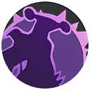
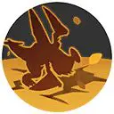
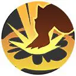
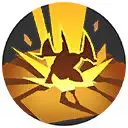
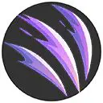

| Attaque | Icône | Description |
|---|---|---|
| Attaque de base |  |
La 5e Attaque de base est améliorée, restaure des HP et inflige des dégâts augmentés. A chaque attaque ou Capacité qui touche, sa vitesse d’attaque est augmentée. |
| Talent | Icône | Description |
|---|---|---|
| Peau Dure |  | Renvoie une partie des dégâts reçus au corps à corps |
| Attaque spéciale 1 | ||
|---|---|---|
| Attaque | Icône | Description |
| Jet de Sable | Lance du sable réduisant le champ de vision de l’ennemi et augmentant la vitesse de déplacement et la vitesse des Attaque de base du lanceur. | |
| Attaque | Icône | Description |
|---|---|---|
| Niveau 6: Draco Charge Amélioration au niveau 12 |
Se lance dans la direction ciblée et inflige des dégâts aux ennemis touchés tout en les projetant en arrière. |
| Attaque | Icône | Description |
|---|---|---|
| Niveau 6: Tunnel Amélioration au niveau 12 |
 | S’enterre dans le sol ; proche d’un ennemi, l’attaque inflige des dégâts de zone et projette l’adversaire. Si Séisme est en cours, craquelle le sol et étend la zone de dégâts. |
| Attaque spéciale 2 | ||
|---|---|---|
| Attaque | Icône | Description |
| Piétisol |  | Frappe le sol après un premier saut et inflige des dégâts aux ennemis pris dedans. |
| Attaque | Icône | Description |
|---|---|---|
| Niveau 8: Séisme Amélioration au niveau 14 |
 | Frappe le sol après un premier saut et inflige des dégâts aux ennemis pris dedans. |
| Attaque | Icône | Description |
|---|---|---|
| Niveau 8: Dracogriffe Amélioration au niveau 14 |
 | S’élance avant d’attaquer à deux reprises, le premier coup projette d’abord l’ennemi, le second inflige des dégâts augmentés et augmente la vitesse d’attaque. |
| Capacité Unite | ||
|---|---|---|
| Attaque | Icône | Description |
| Rage Déchainée Débloquage au niveau 9 |
S’élance sur sa cible avant de déchaîner plusieurs coups avant la projeter et l’étourdir un moment. | |